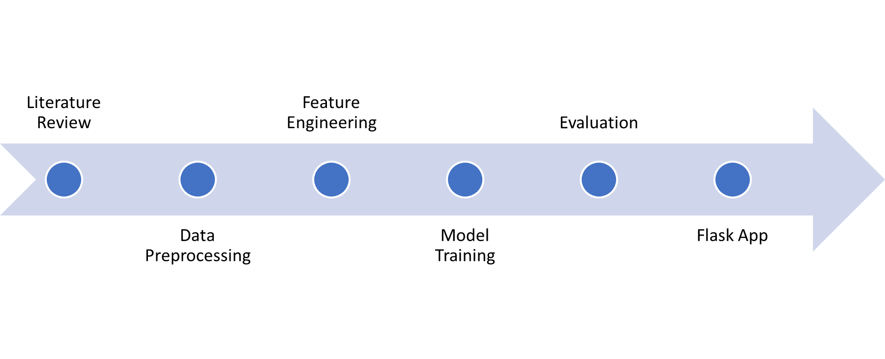
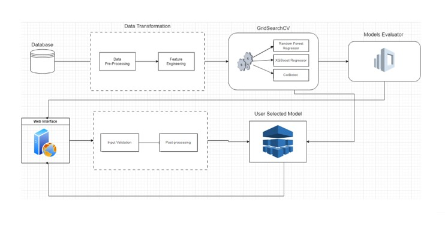
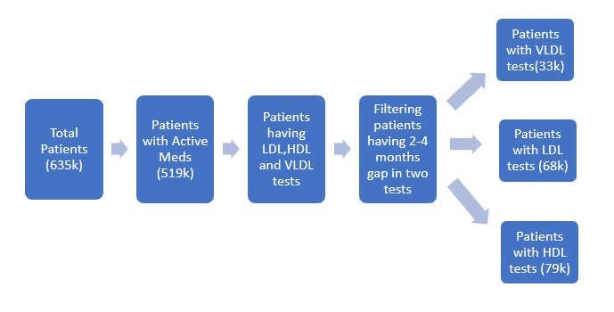
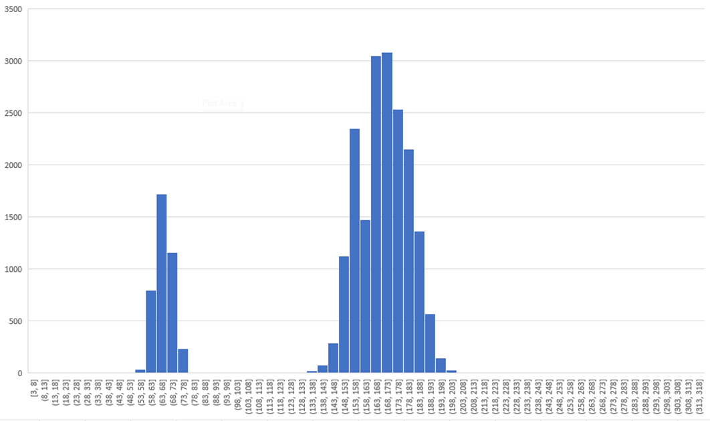
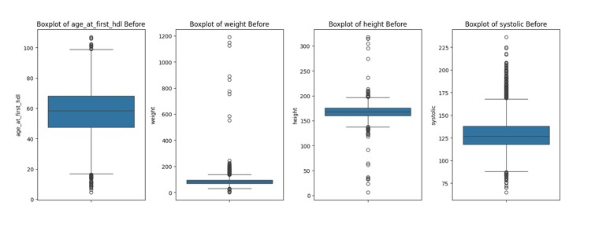
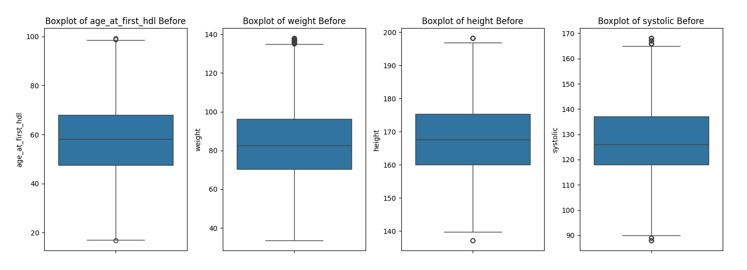
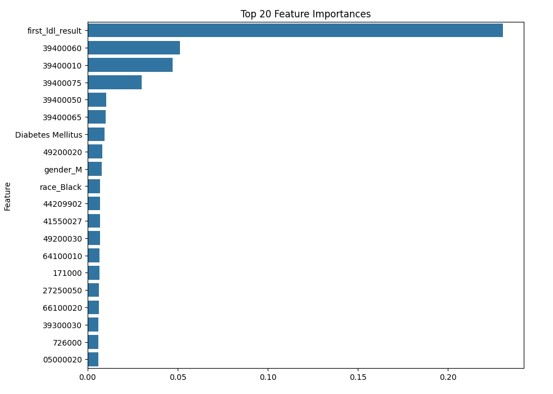
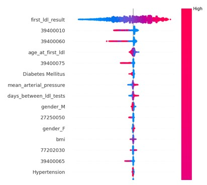
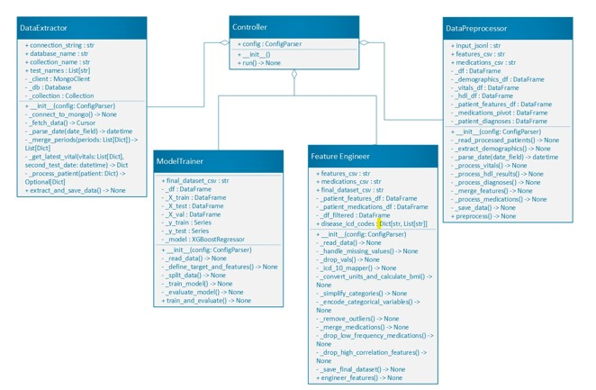

Treatment Efficacy Model — Predicting Cholesterol Levels
Industry Project CureMD AI Engineer
We built a machine learning system that predicts a patient’s next cholesterol level (LDL, HDL, VLDL) and the expected change from baseline using prior lab results, medication exposure during the interval, and additional vitals, demographics, and diagnoses. The pipeline spans cohort creation, feature engineering (e.g., total medication dose over an active window), robust data cleaning, encoding/scaling strategies, and model evaluation with cross-validation.
1) Problem Statement
Goal: Predict a patient’s cholesterol at the second test (LDL/HDL/VLDL) and/or the delta between two tests, conditioning on the initial state and prescribed treatment during the interval.
Objectives
- Predict LDL / HDL / VLDL levels at the second test and the Δ change between two tests.
- Incorporate medication exposure during the interval along with baseline labs, vitals, and demographics.
- Build a robust, reproducible pipeline for cohort construction, feature engineering, and model evaluation.
- Compare linear baselines vs. ensemble methods and report performance using cross-validation RMSE.
Project Timeline

2) Clinical Intro (Why Cholesterol?)
High LDL and VLDL are associated with atherosclerosis and elevated cardiovascular risk, while HDL helps remove cholesterol. Modeling expected response under treatment helps personalize care plans and set realistic clinical targets.
3) Data & Cohort Construction
Source & Filtering
- ~635k patients initially across multiple lab types.
- Kept patients with an active medication range and at least two lab tests (LDL/HDL/VLDL).
- Selected lab pairs 2–4 months apart (most prevalent window).
Medication exposure: computed total_dose = dose_g × active_days for meds active in the 2–4 month window (grouped by GPI code). Vitals were taken closest before the second lab.
Feature Tables
- patient_features_table: vitals, demographics, diagnoses, prior labs.
- medications_table: wide matrix by grouped GPI columns for the active window; rare meds (<1%) removed.


4) Data Challenges & Cleaning
- Medication frequency anomalies (e.g., extreme frequencies) causing outliers in
total_dose→ corrected during cleaning. - Calculated nulls per column; imputed categorical (race, marital status) with “unknown”; dropped identifiers and columns with excessive missingness.
- Unit inconsistency in height → standardized and used BMI from height & weight.
- Plotted the BMI distribution and observed a clear two-normal (bimodal) pattern, indicating that some weight values were recorded in pounds and others in kilograms. This was addressed by applying a threshold and converting values above the threshold into kilograms.
- Outliers treated via IQR capping or removal; applied mean/median imputation where appropriate.
- After merging, dropped highly collinear features (corr > 0.9).



5) Feature Engineering & Encoding
- Medications: Grouped by GPI; computed total dose over active window; removed very sparse meds.
- Due to a very large feature space (1000+ medication features) with many empty values, medications were handled using a hybrid strategy: cholesterol-related drugs (e.g., statins) and medications related to common comorbidities (e.g., diabetes, hypertension) were kept as-is, while remaining medications were grouped by frequency — the top 10 most frequent were kept, and the rest were grouped using GPI medication codes (widely used in the US for drug classification). We first grouped at the top-10 GPI level, then progressively aggregated remaining medications into broader buckets (e.g., top-8, and so on), where moving “up” the GPI hierarchy transitions into more general medication categories. This reduced sparsity while preserving clinically meaningful signal.
- Diagnoses: ICD codes (typically 1–4 digit groupings when truncated from ICD-10) were aggregated into clinically relevant categories (diagnosed before the second test) to capture comorbidity effects without exploding dimensionality.
- Binning: Age, BMI classes, MAP to capture non-linear effects.
- Encoding: One-hot for gender/race/marital (drop-first for linear models); tree models used full one-hot or ordinal as needed.
- Scaling: Standard/Min-Max/Robust scaling for non-tree models.
6) Targets & Evaluation
Two target definitions were modeled for each lipid: Second Test (absolute) Change (Δ) between tests using cross-validation and RMSE as the primary metric.
7) Models
- Linear: Linear Regression, Lasso (L1), Ridge (L2), Elastic Net.
- Tree/Ensemble: Decision Tree, Random Forest, Gradient Boosting (XGBoost, LightGBM, CatBoost).
- Tuning: Hyperparameter search with cross-validation; addressed medication sparsity via grouping, regularization, and tree-based methods.
8) Results (Mean CV RMSE)
Random Forest
- LDL: 2nd test 23.09 · Δ 19.44
- VLDL: 2nd test 7.93 · Δ 7.19
- HDL: 2nd test 7.07 · Δ 6.01
Gradient Boosting
- XGBoost (LDL/HDL/VLDL 2nd test): 23.04 · 7.02 · 7.94
- LightGBM (LDL): 2nd test 23.28 · Δ 19.41
- CatBoost (LDL): 2nd test 23.04 · Δ 19.41
Linear Baseline
- Elastic Net (LDL): 2nd test 26.13 · Δ 20.40
Ensembles (RF/GBMs) consistently outperformed linear models for both absolute and Δ targets, indicating non-linear relationships across labs, meds, and clinical covariates.


9) Software Design
The codebase follows a modular layout with clear boundaries: DataExtractor, DataPreprocessor, FeatureEngineer, and ModelTrainer, enabling reproducible experiments, easier debugging, and faster iteration.
